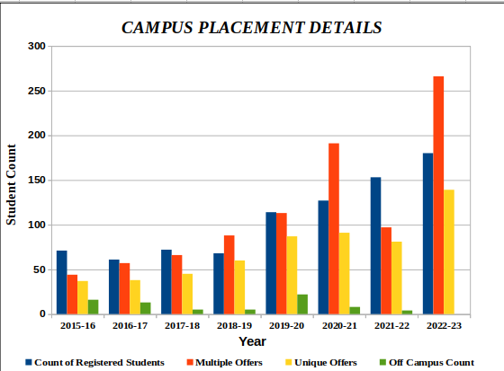

Welcome to Department of Information Science And Engineering
Information Science and Engineering is a discipline which includes theories, standards, methods and innovations of various different domains like mathematics, cognitive science and information theory to solve complex IT problems. Information Science Engineering colleges focus on collecting, categorizing, strategizing, and storage of information. It also throws light on how to analyze and interpret the raw data. It is an area of professional practice that addresses the effective communication between information in the context of social, organizational, and individual needs in order to build the software or embedded applications for societal benefit.
In 2019, the department of Information Science & Engineering (ISE) collaborated with ICT Academy to offer industry-based courses like Google (for Cloud and Android courses), and UiPath (for Robotic Process Automation course). Since 2020, ISE is part of Google’s Career Readiness Program. Department has a high placement rate with attractive packages and has a high-end NVIDIA server to explore more into data analytics and also has qualified and supportive faculty to cater to the needs of the aspiring students and upgrade their skills.
CORE COMPANIES VISITED
Following is the list of core companies from India and Japan visiting NMAMIT, Nitte for placements to the students of the Department of Information Science & Engineering:
Indian Core Companies: NUTANIX, IBM India Software Labs, MScripts, VMWare, Informatica, Oracle managed cloud services, Siemens Healthcare, Mercedes Benz, Juniper Networks India Pvt Ltd, Robert Bosch, Walmart Labs, Robosoft Technologies, YMedia Labs, ACI Worldwide Solutions Pvt Ltd, Analytics Quotient, Semnox Solutions, 99Games Pvt Ltd, Sony India Software Centre Private Limited, Hashedin Technologies, TEKsystems Global Services Private Limited, Avysh, CGI, Exito media concepts Pvt Ltd, Faurecia, SLK Software, Attra Infotech, Netskope, Allegion India Pvt Ltd, Gobal Delight, Medici Technologies Pvt Ltd, Brillio, Invenger Technologies, SpurTree Technologies, Rubik India Private Limited, EVIVE Software Analytics Pvt. Ltd., Loco, Trescon, Niveus Solutions (36 core companies)
Japanese Companies: Nidec-Read, AIBOD, Kobayashi create, Yokogawa Electric, Komatsu Kaihatsu Corp
Campus placement details:
